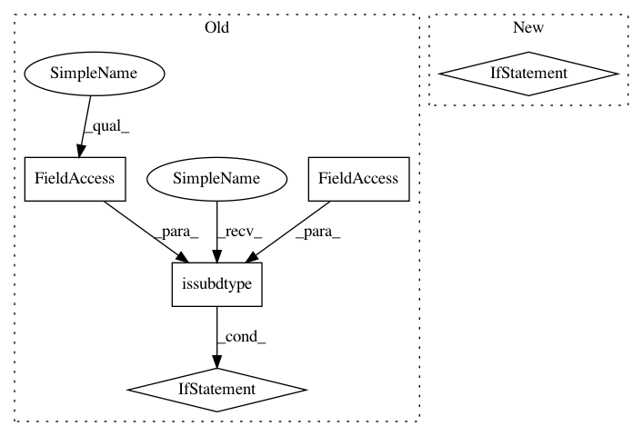

49f4e83ae4323e032bdd232e466e59b4aeceb458,dataset/batch_image.py,ImagesBatch,_invert_,#ImagesBatch#Any#Any#,587
Before Change
image = image.copy()
if channels == "all":
channels = list(range(image.shape[-1]))
max_intencity = 255 if np.issubdtype(image.dtype, np.integer) else 1.
image[..., channels] = max_intencity - image[..., channels]
return image
def _salt_(self, image, p_noise=.015, color=255, size=(1, 1)):
After Change
image = PIL.ImageChops.invert(image)
else:
bands = list(image.split())
channels = (channels,) if isinstance(channels, Number) else channels
for channel in channels:
bands[channel] = PIL.ImageChops.invert(bands[channel])
image = PIL.Image.merge("RGB", bands)
return image
In pattern: SUPERPATTERN
Frequency: 3
Non-data size: 5
Instances
Project Name: analysiscenter/batchflow
Commit Name: 49f4e83ae4323e032bdd232e466e59b4aeceb458
Time: 2018-03-28
Author: g.ivanov@analysiscenter.ru
File Name: dataset/batch_image.py
Class Name: ImagesBatch
Method Name: _invert_
Project Name: analysiscenter/batchflow
Commit Name: d381fb0787395076ecb8a3bd6984f52a16793fae
Time: 2018-03-27
Author: g.ivanov@analysiscenter.ru
File Name: dataset/batch_image.py
Class Name: ImagesBatch
Method Name: _invert_
Project Name: analysiscenter/batchflow
Commit Name: 49f4e83ae4323e032bdd232e466e59b4aeceb458
Time: 2018-03-28
Author: g.ivanov@analysiscenter.ru
File Name: dataset/batch_image.py
Class Name: ImagesBatch
Method Name: _invert_
Project Name: scikit-image/scikit-image
Commit Name: 0bf6d2940a46cd414be5d738232e49602fb90826
Time: 2018-05-22
Author: lagru@mailbox.org
File Name: skimage/morphology/extrema.py
Class Name:
Method Name: local_maxima